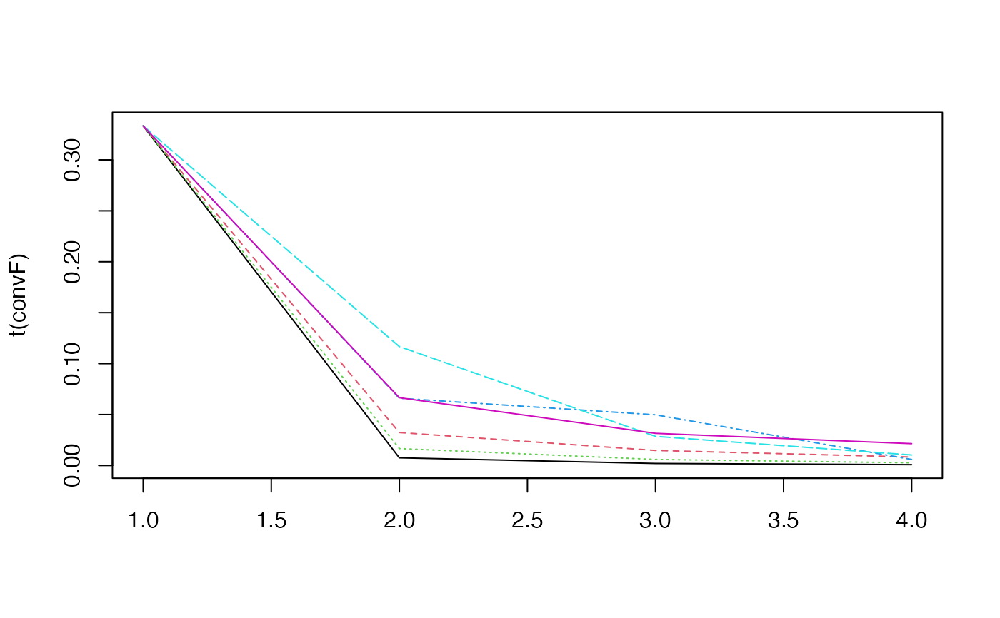
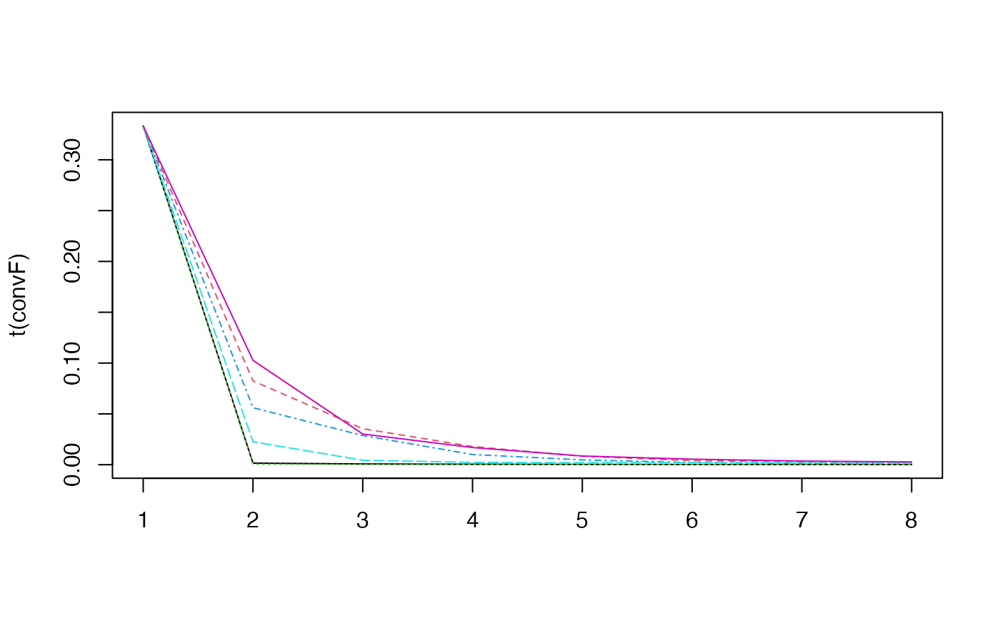

Reverse-engineer the network.
# S4 method for micro_array inference( M, tour.max = 30, g = function(x) { 1/x }, conv = 0.001, cv.subjects = TRUE, nb.folds = NULL, eps = 10^-5, type.inf = "iterative" )
Arguments
| M | a micro_array object. |
|---|---|
| tour.max | maximal number of steps. Defaults to `tour.max=30` |
| g | the new solution is choosen as (the old solution + g(x) * the new solution)/(1+g(x)) where x is the number of steps. Defaults to `g=function(x) 1/x` |
| conv | convergence criterion. Defaults to `conv=10e-3` |
| cv.subjects | should the cross validation be done removing the subject one by one ? Defaults to `cv.subjects=TRUE`. |
| nb.folds | Relevant only if cv.subjects is FALSE. The number of folds in cross validation. Defaults to `NULL`. |
| eps | machine zero. Defaults to `10e-5`. |
| type.inf | "iterative" or "noniterative" : should the algorithm be computed iteratively. Defaults to `"iterative"`. |
Value
A network object.
References
Jung, N., Bertrand, F., Bahram, S., Vallat, L., and Maumy-Bertrand, M. (2014). Cascade: a R-package to study, predict and simulate the diffusion of a signal through a temporal gene network. Bioinformatics, btt705.
Vallat, L., Kemper, C. A., Jung, N., Maumy-Bertrand, M., Bertrand, F., Meyer, N., ... & Bahram, S. (2013). Reverse-engineering the genetic circuitry of a cancer cell with predicted intervention in chronic lymphocytic leukemia. Proceedings of the National Academy of Sciences, 110(2), 459-464.
Author
Nicolas Jung, Frédéric Bertrand , Myriam Maumy-Bertrand.
Examples
#>#> We are at step : 1 #> The convergence of the network is (L1 norm) : 0.0068 #> We are at step : 2 #> The convergence of the network is (L1 norm) : 0.00121 #> We are at step : 3 #> The convergence of the network is (L1 norm) : 0.00096#> Formal class 'network' [package "Cascade"] with 6 slots #> ..@ network: num [1:100, 1:100] 0 0 0 0 0 0 0 0 0 0 ... #> ..@ name : chr [1:100] "gene 1" "gene 2" "gene 3" "gene 4" ... #> ..@ F : num [1:3, 1:3, 1:6] 1.0574 0.048 0.0588 0 1.0574 ... #> ..@ convF : num [1:6, 1:4] 0.333 0.333 0.333 0.333 0.333 ... #> .. ..- attr(*, "dimnames")=List of 2 #> .. .. ..$ : NULL #> .. .. ..$ : chr [1:4] "convF" "cc" "cc" "cc" #> ..@ convO : num [1:4] 5.36e+04 6.80e-03 1.21e-03 9.61e-04 #> ..@ time_pt: int [1:4] 1 2 3 4#> We are at step : 1 #> The convergence of the network is (L1 norm) : 0.01096 #> We are at step : 2 #> The convergence of the network is (L1 norm) : 0.00302 #> We are at step : 3 #> The convergence of the network is (L1 norm) : 0.00217 #> We are at step : 4 #> The convergence of the network is (L1 norm) : 0.00177 #> We are at step : 5 #> The convergence of the network is (L1 norm) : 0.00146 #> We are at step : 6 #> The convergence of the network is (L1 norm) : 0.00111 #> We are at step : 7 #> The convergence of the network is (L1 norm) : 0.00089#> Formal class 'network' [package "Cascade"] with 6 slots #> ..@ network: num [1:74, 1:74] 0 0 0 0 0 0 0 0 0 0 ... #> ..@ name : Named chr [1:74] "ID2-AS1" "CCDC40" "unknown" "LOC105379178" ... #> .. ..- attr(*, "names")= chr [1:74] "236719_at" "1563563_at" NA "1556161_a_at" ... #> ..@ F : num [1:3, 1:3, 1:6] 0.6089 0.0147 0 0 0.6089 ... #> ..@ convF : num [1:6, 1:8] 0.333 0.333 0.333 0.333 0.333 ... #> .. ..- attr(*, "dimnames")=List of 2 #> .. .. ..$ : NULL #> .. .. ..$ : chr [1:8] "convF" "cc" "cc" "cc" ... #> ..@ convO : num [1:8] 0.85033 0.01096 0.00302 0.00217 0.00177 ... #> ..@ time_pt: num [1:4] 60 90 210 390# }